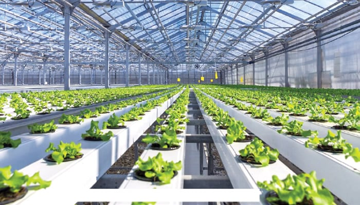
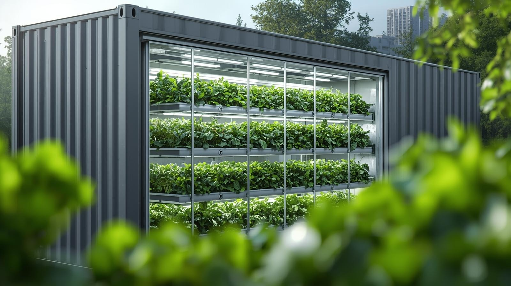
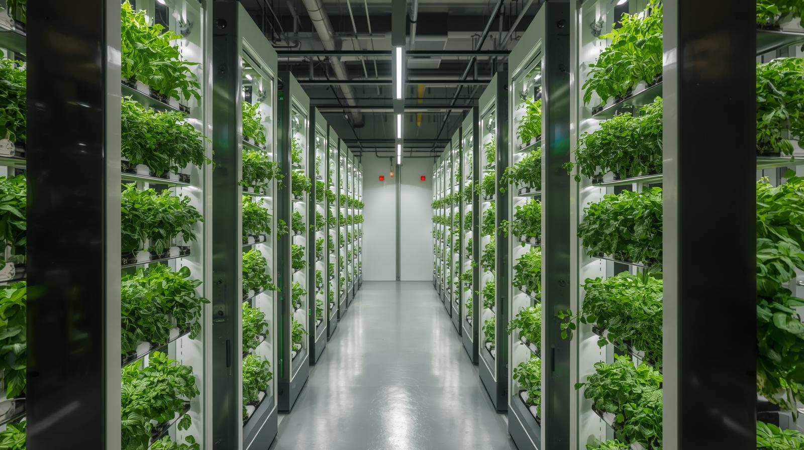
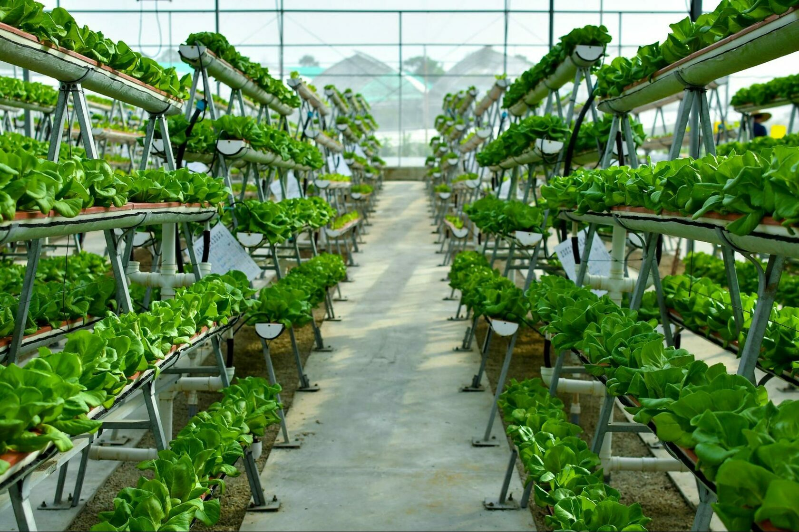
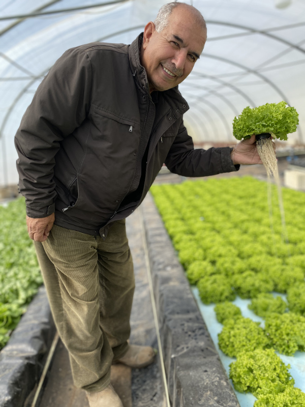

Hydroponics is a soilless method of growing plants where roots are supplied directly with a nutrient-rich water solution. Instead of soil, plants may be supported by inert mediums like perlite, rockwool, coco coir, or clay pebbles. The main idea: plants don't need soil itself — they need the water, oxygen, and nutrients that soil usually provides. Hydroponics delivers these in a controlled, highly efficient way.


Container farms are shipping containers (usually 20–40 feet long) that are converted into fully controlled indoor farms. Inside, crops are grown vertically using hydroponics or aeroponics, with integrated LED lighting, irrigation, climate control, and monitoring systems. They are essentially modular "plug-and-play" vertical farms, making them portable and easy to deploy in almost any environment.

Tower systems are vertical columns where plants are grown in stacked rows around the tower, usually using hydroponics or aeroponics. Instead of spreading crops horizontally across land, plants grow upward in compact, cylindrical or rectangular structures. They're widely used in urban farms, homes, schools, restaurants, and greenhouses.

Aeroponics is a soilless cultivation method where plant roots are suspended in the air and misted with a nutrient-rich solution. Unlike hydroponics or soil farming, roots are exposed to air, allowing maximum oxygen uptake. This method was developed by NASA for space missions as it uses very little water and no soil.
Ayed Shkhhanbeh, a Jordanian farmer from Madaba and owner of Tala Farms, began helping his father in farming at the age of 8. While rooted in traditional farming, he adopted modern techniques like hydroponics through collaboration with the HAED-JO project, which helped him save 70% of water usage, reduce costs, and increase productivity. Today, Tala Farms produces around half a million heads of lettuce annually, supplies hotels and restaurants locally, and is planning to export, serving as a successful model of sustainable agriculture that integrates business with community development.
